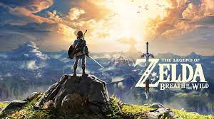

The Legend of Zelda: Breath of the Wild is a 2017 action-adventure game developed and published by Nintendo for the Nintendo Switch and Wii U consoles. Breath of the Wild is the nineteenth installment of The Legend of Zelda franchise and is set at the end of the Zelda timeline. The player controls Link, who awakens from a hundred-year slumber to defeat Calamity Ganon and restore the kingdom of Hyrule.
Similar to the original 1986 The Legend of Zelda game, players are given little instruction and can explore the world freely. Tasks include collecting various items and gear to aid in objectives such as puzzle-solving or side quests. The world is unstructured and designed to encourage exploration and experimentation, and the main story quest can be completed in a nonlinear fashion.
